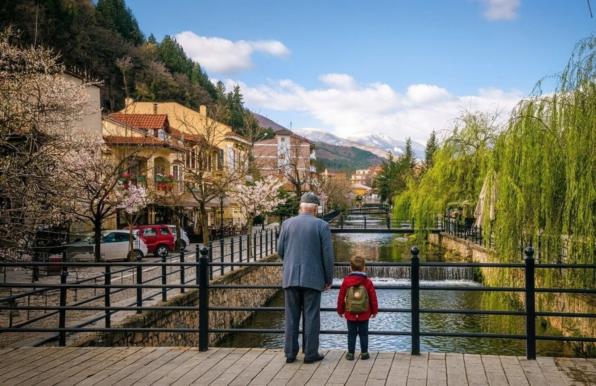

Πίσω από τις «πρώτες θέσεις» και τις συζητήσεις για το ποιος δικαιούται να κάτσει πού, υπάρχει η αληθινή Π.Ε. Φλώρινας που αγωνιά. Ποια είναι η πραγματική ουσία για τον τόπο μας;
Πριν λίγες μέρες ζήσαμε τις βραβεύσεις των μαθητών μας. Μια στιγμή που η Φλώρινα οφείλει να υποκλίνεται στο μέλλον της. Είναι η ελπίδα μας, το μόνο αληθινό κεφάλαιο που μας έχει απομείνει. Όμως, η πίκρα είναι μεγάλη όταν βλέπεις θεσμικούς παράγοντες, που υπηρετούν τον τόπο χρόνια, να επισκιάζουν ακόμα και αυτές τις στιγμές με δημόσιες διαφωνίες για το «πρωτόκολλο» και την πρώτη σειρά των καθισμάτων. Το είδαμε να συμβαίνει ακόμα και μέσα στην Εκκλησία.
Ας θυμηθούμε όμως την ουσία: Ακόμα κι αν υπάρχουν τυπικοί κανονισμοί, η πίστη μας λέει ότι μέσα στον Ναό είμαστε όλοι ίσοι. Είναι λυπηρό να βλέπουμε την πολιτική σκοπιμότητα να «αναζητά» την πρώτη καρέκλα, την ώρα που οι ίδιοι οι ιερείς μας πασχίζουν να φέρουν τους νέους κοντά στην Εκκλησία. Πώς θα έρθει ο νέος όταν βλέπει μια εξουσία που νοιάζεται περισσότερο για τη θέση της παρά για τον διπλανό της; Ο σεβασμός δείχνεται με την ταπεινότητα, όχι με το «πρωτόκολλο».
Την ίδια στιγμή, ακούμε πάλι για εκατομμύρια που έρχονται στη Δυτική Μακεδονία. Αλλά τα κονδύλια αυτά δεν λένε τίποτα αν δεν μετατραπούν σε πραγματική καινοτομία και στήριξη του τοπικού μας εμπορίου. Αν δεν δώσουμε στους νέους μας λόγο να μείνουν εδώ, οι βραβεύσεις θα είναι απλώς ένα «αποχαιρετιστήριο» πριν φύγουν.
Δεν με αφορούν οι καρέκλες των επισήμων, ούτε οι τυπικές ανακοινώσεις. Με νοιάζει η Π.Ε. Φλώρινας που ερημώνει. Πιστεύω όμως ότι μπορούμε να αναγεννηθούμε, αν αφήσουμε πίσω τα «καλάμια» και δουλέψουμε όλοι μαζί, με ειλικρίνεια και αληθινό σεβασμό στον συμπολίτη μας. Η ελπίδα θα ξαναγυρίσει μόνο αν κοιτάξουμε την ουσία και όχι τη βιτρίνα.
← Επιστροφή στα Άρθρα